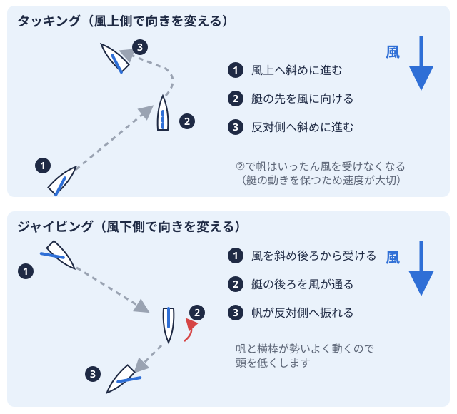

怪我・体調 2026-09-11
ヨット部の車酔い・船酔い対策｜乗艇前・レース中・遠征バスの3場面と酔い止めの選び方
大学からヨット部に入った部員の中には、乗艇するたびに気持ち悪くなり、練習やレースに集中できないと悩む人がいます。一般的な乗り物酔い対策はフェリーやバスが前提で、タッキング風が吹いてくる方向へ進むとき、艇の先を風に向けて回し、帆を張る側を左右反対にする方向転換。 
結論：対策は「乗艇前」「レース中」「遠征移動」の3場面で分けて考える
揺れの性質と、その場でできることは場面ごとに違います。まずは下の早見表で、自分が困っている場面と対策を確認してください。効果の出方には個人差があります。
| 対策 | 乗艇前（前日〜当日朝） | レース中 | 遠征の移動中 |
|---|---|---|---|
| 睡眠 | 前日は睡眠を確保する | 疲れを残さないことが前提 | 前泊や夜行移動では仮眠を取る |
| 食事・水分 | 飲酒を控え、水分をとり、朝食は軽めに | 空腹・満腹どちらも避ける | 満腹での乗車を避ける |
| 薬 | 添付文書に従い、時間を逆算して服用 | 眠気の出る成分に注意 | 運転する人は眠気の出る薬を避ける |
| 視線 | ー | 顔を上げて水平線やマークを見る | 進行方向を見て、スマホを控える |
| 換気・外気 | ー | 風を受ける姿勢をとる | 窓を少し開ける |
| ツボ・バンド | 手首のバンドを事前に試す | 使い慣れたものだけ使う | 乗車前に装着する |
なぜヨットのレースは酔いやすいのか
結論から言うと、目で見る景色と体が感じる揺れがずれると、酔いやすくなります。MSDマニュアル家庭版では、乗り物酔いは目や内耳などから脳に入る動きの情報が食い違うことで起こると説明されています（MSDマニュアル家庭版「乗り物酔い」）。
一般的な船酔い対策では、揺れの少ない位置を選ぶ、遠くの景色を見る、換気するといった方法が紹介されています（TSURINEWS、VELTRA Cruise）。これらは、比較的一定方向にゆっくり揺れる船が前提です。
一方、470級全長4.7mの2人乗り競技用ヨット。大きな追い風用の帆とワイヤーを使う。 やスナイプ級2人乗りの競技用ヨット。追い風用の大きな帆を持たず、ワイヤーも使わない。などの小型ディンギーは、コース取りの中でタッキングやジャイビングを何度も行い、そのたびに艇の傾き（ヒール風を受けた艇が横に傾くこと。傾きすぎると転覆しやすいため、体重などで抑える。）や進行方向が短い間隔で変わります。揺れの向きと大きさが一定でないぶん、酔いやすい場面がある場合があります。
やスナイプ級2人乗りの競技用ヨット。追い風用の大きな帆を持たず、ワイヤーも使わない。などの小型ディンギーは、コース取りの中でタッキングやジャイビングを何度も行い、そのたびに艇の傾き（ヒール風を受けた艇が横に傾くこと。傾きすぎると転覆しやすいため、体重などで抑える。）や進行方向が短い間隔で変わります。揺れの向きと大きさが一定でないぶん、酔いやすい場面がある場合があります。
スキッパーよりクルーが酔いやすい場面がある
スキッパー2人乗りの艇で、後ろ側に座って舵と大きな帆を操作し、進む方向を決める人。 は進行方向を見て舵を取りますが、クルー2人乗りの艇で、前側に座って小さな帆などを操作し、体重を使って艇の傾きを抑える人。はジブマストより前に張る小さめの帆。大きな帆と組み合わせて風を受ける。
は進行方向を見て舵を取りますが、クルー2人乗りの艇で、前側に座って小さな帆などを操作し、体重を使って艇の傾きを抑える人。はジブマストより前に張る小さめの帆。大きな帆と組み合わせて風を受ける。 のトリムロープなどを使って、帆の張り具合や開き具合を風に合わせて調整すること。のために艇の前方や横向きの姿勢をとることが多く、視覚と揺れの向きがずれやすい場面があります。ただし体質による個人差が大きく、ポジションだけで酔いやすさが決まるわけではありません。ポジションごとの役割はスキッパーとクルーの違いの記事も参考にしてください。
のトリムロープなどを使って、帆の張り具合や開き具合を風に合わせて調整すること。のために艇の前方や横向きの姿勢をとることが多く、視覚と揺れの向きがずれやすい場面があります。ただし体質による個人差が大きく、ポジションだけで酔いやすさが決まるわけではありません。ポジションごとの役割はスキッパーとクルーの違いの記事も参考にしてください。
遠征のバス移動での車酔いとの違いと共通点
バスの車酔いと船酔いは、感覚のずれが原因という点では共通します。バスは進行方向を予測しやすい一方、レース中のヨットは風向き・波・他艇との位置関係で動きが変わるため、対策は分けて考えます。移動中にすでに酔った状態で乗艇すると、症状が続く場合があります。
乗艇前にできる対策
乗艇前は、前日の過ごし方と当日朝の準備で差がつきやすい場面です。
前日は睡眠を確保し、飲酒を控え、朝食は軽めにとる
- 前日は睡眠不足を避ける。
- 前日の飲酒を控え、水分をとる。
- 当日は空腹のまま乗らず、消化のよいものを軽めに済ませる。
空腹の乗艇も直前の食べ過ぎも、胃腸への負担になるとされています（TSURINEWS）。部としての食事づくりは食事・栄養管理の記事も参考になります。
酔い止め薬は添付文書に従い、眠気の出る成分に注意する
酔い止め薬は定番の対策ですが、使い方は製品ごとに異なります。服用のタイミングや量は、必ず製品の添付文書に従ってください。目安として「乗る30分〜1時間前」と案内される例がありますが、製品によって違うため、持病や併用薬がある場合を含めて薬剤師に相談してください。
市販薬には第一世代の抗ヒスタミン成分を含み、眠気が出やすいものがあります（EPARKくすりの窓口）。レース中は判断力や反応の速さが求められるため、成分表示を確認し、本番以外の練習日に一度試しておくと安心です。眠気の出る成分を飲んだ後は、車や自転車の運転を避けるよう添付文書に書かれている製品があります（Honda釣り）。
手首のツボ押しバンドは「使い慣れたもの」を試す
手首の内側のツボ（P6）を押すバンドも市販されています。感じ方には個人差があり、効果を保証するものではないため、薬の代わりではなく補助として、練習日に試しておく程度が現実的です。
乗艇中・レース中にできる対策
レース中は、手元作業に集中し続けず、視線と姿勢を意識的に切り替えることが基本です。
作業の合間に顔を上げて水平線やマークを見る
遠くの景色や水平線を見ると、視覚と体の感覚のずれを補いやすいとされています（VELTRA Cruise）。ジブトリムなどの合間に、風上自分の艇から見て、風が吹いてくる側。風上へ進むにはジグザグに走る必要がある。 や遠くのマークを見る時間をつくってみてください。
や遠くのマークを見る時間をつくってみてください。
タッキング・ジャイビングが多い日は、早めに体調を伝える
強風やうねりでタッキング・ジャイビングの回数が増える日は、酔いやすさが増す場面のひとつです。練習の合間に艇を止めて呼吸を整える、悪化する前にコーチや上級生へ伝える、といった対応が考えられます。動作の回数が増える理由はタッキング・ジャイビングの記事で確認できます。
乗艇中に酔ってしまったときの対処
酔ってしまったら、無理に続けず、早い段階で周りに伝えて着岸を判断するのが基本です。医療的な判断が必要な症状がある場合は、医師や薬剤師に相談してください。
- 風を受けられる姿勢で外気を吸い、深くゆっくり呼吸する。
- 顔を上げて、遠くの水平線や陸地を見る。
- ジブトリムなど手元の作業は、可能なら他の部員と交代する。
- 我慢せず、早めにコーチや同乗者へ伝える。
- 改善しない場合は、無理をせず着岸するかどうかを指導者と一緒に判断する。
吐き気が強いと、判断力や反応が落ちて危険な場面があります。艇上での無理は、本人にも周りにもリスクになります。
遠征のバス・車移動での車酔い対策
遠征の移動中は、進行方向を向いた席に座る、揺れの少ない前方や中央付近を選ぶ、窓を少し開けて換気する、スマートフォンなど手元を見続ける作業を控える、といった方法が紹介されています（サカボン）。持ち物としての酔い止めは遠征の持ち物チェックリストにまとめています。
部員がハイエースなどのレンタル車を運転する遠征では、運転者が眠気の出る酔い止めを飲まないことが大切です。服用後の運転を避けるよう案内される製品があるため、添付文書を確認し、運転者は服用しない前提で担当を決めておくと安全です。
新入部員が慣れていく期間と、上級生・主将ができること
乗艇を重ねる中で症状が和らぐ人もいますが、慣れるまでの期間には個人差があり、必ず短期間で克服できるとは限りません。部としては次のような工夫が考えられます。
- 体調不良を申し出やすいルールをつくる（申し出た部員を責めない）。
- 初回の乗艇時間を短くし、慣れに合わせて延ばす。
- 酔いやすい日は、無理をさせずに陸上の役割と交代できるようにする。
- 酔い止めの使い方は、各自が添付文書と薬剤師の説明に従うよう伝える。
乗艇前に準備するものは見学・体験の持ち物と服装の記事も参考になります。
よくある質問
ツボ押しバンドは効きますか？
感じ方には個人差があり、効果を保証できません。薬の代わりではなく補助として、練習日に試してみる程度にとどめてください。
慣れるまでどれくらいかかりますか？
個人差が大きく、一概には言えません。数回の乗艇で楽になる人もいれば、時間がかかる人もいます。焦らず、初回の乗艇時間を短くするなど段階的に進めてください。
酔い止めは毎回飲んでもよいですか？
製品や体質、持病、併用薬によって異なります。添付文書に従い、頻繁に使う場合は薬剤師に相談してください。
部の運営者（主将・マネージャー）の方へ
遠征費や酔い止め・装備の負担を、協賛で補うという方法もあります。部の運営を支える資金の集め方として、参考にしてください。
まとめ
ヨット部の車酔い・船酔い対策は、「乗艇前の準備」「レース中の視線と合間の工夫」「遠征のバス・車移動」の3場面に分けると実践しやすくなります。酔い止め薬は添付文書に従い、眠気の出る成分には注意してください。各大学のヨット部が活動する水域全国の大学ヨット部を地域ごとに分けた区分。北海道から九州まで全国に9つある。は、ヨットマニアの水域別ディレクトリ（関東）や、早稲田大学ヨット部のページから確認できます。遠征先の水域の特徴を事前に調べる際の参考にしてください。
出典
PR
この部活・競技を応援したい方へ
体育会学生を支援するプラットフォーム「ツナカレ」で、応援できる部活を探せます。
PR
取材してほしい部活を募集中
あなたの部活・大会を取材してほしい方はこちらからご依頼ください。
オフシーズン・引退後に、長期インターンという選択
部活で培った力を実務で試す。16タイプ診断（30秒）で合う企業がわかります。